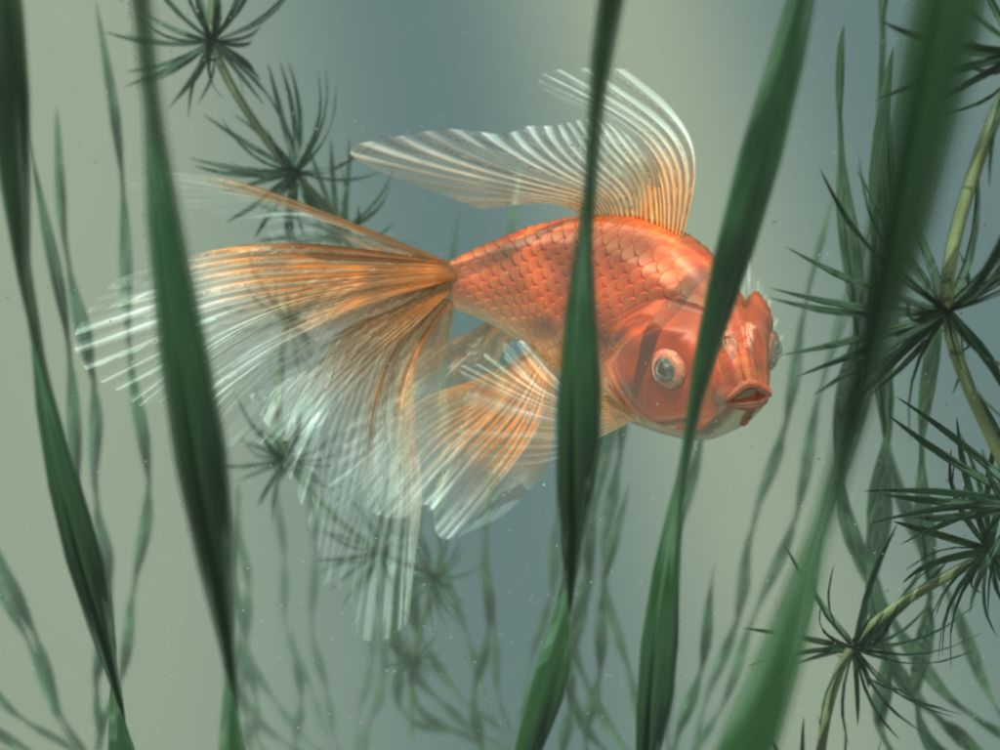
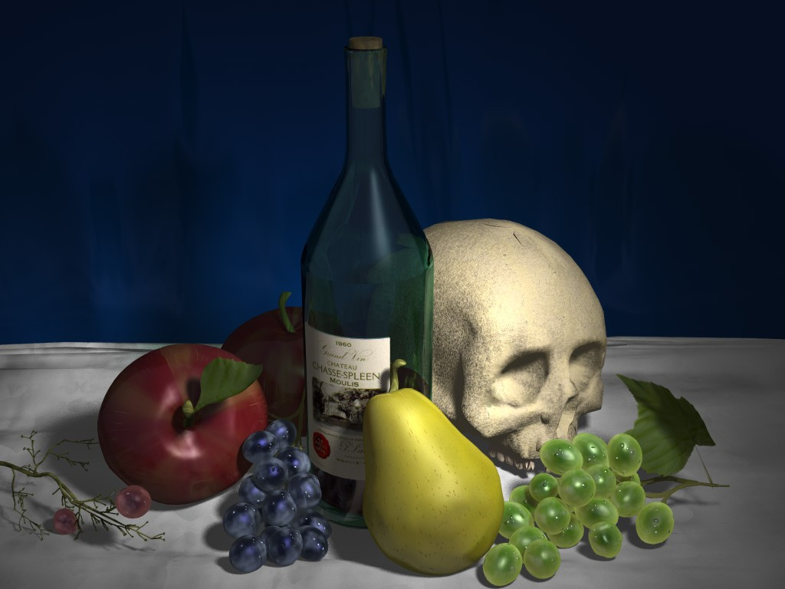

Gallery¶
Empress by Nathan Ryan¶
{kind=link}
I used skinning to create the body and fins. Basically I created several cross-sections of the fish with the splining tool, and then skinned across them with the skinning tool. Same for the fins. The spines of the fins are a bump-mapped texture. The scales are actually a displaced texture. I straightened the scales and spines using UV mapping. I also used layer parameters on the textures to vary colors and height of displacement. A few subtle touches include the debris in the water which is just some transparent planes with specks on them, and the variable light from above which is done with a translucent textured plane between the light and the scene. The plants were created with XFrog from which AOI easily imports models.
Still Life by Nathan Ryan¶
{kind=link}
My first AoI render, but I spent a lot of time on it. The skull is an imported obj file that I got off the internet, but the rest is by me. Lots of interesting textures. Did cloth by randomizing points on a mesh and then stretching it out mostly in one direction. I’ve recently made some improvements with the grape textures and material and added a grape stem made with Forester.